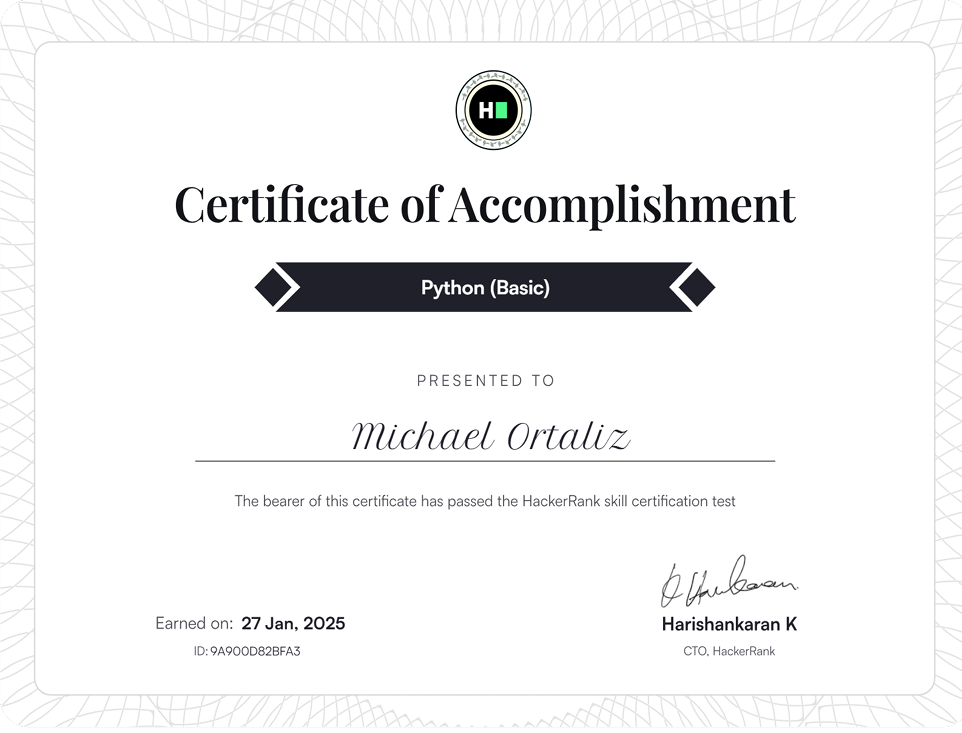
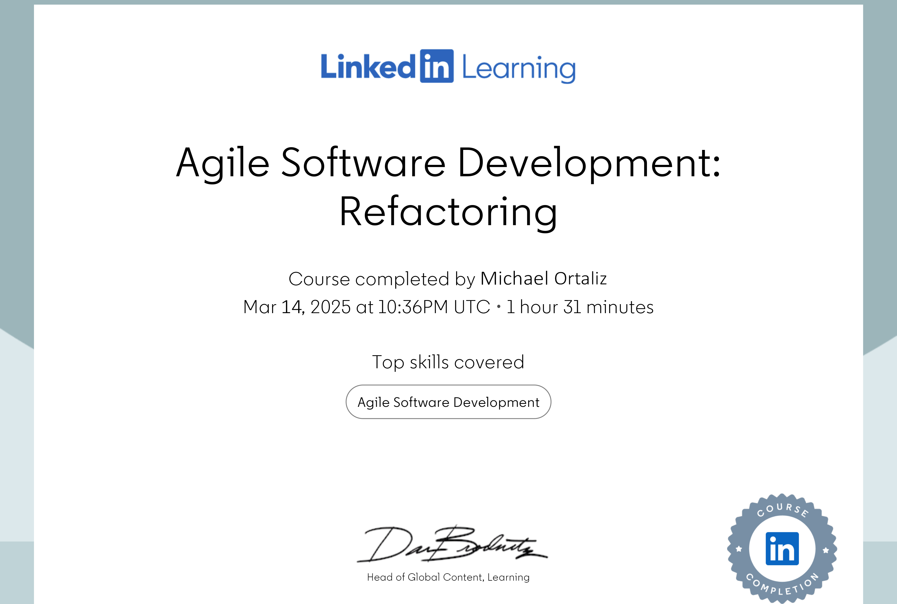

Certifications

Python Programming Certification

HTML & CSS Certification

Backend Development Certification

Django Framework Certification
Python | HTML | Backend Developer | Django
I'm a passionate aspiring backend developer with a strong foundation in Python, Django, and API development. I thrive on solving complex problems, building scalable web applications, and creating efficient database architectures. With a keen eye for performance optimization and clean code, I enjoy crafting seamless digital experiences. Beyond development, I'm always expanding my knowledge—whether it's through hands-on projects, certifications, or deep-diving into emerging tech. My goal is to build impactful software solutions that enhance productivity, streamline processes, and push the boundaries of innovation.
Backend Developer - Company Name (Year - Present)
Developed and maintained scalable backend solutions using Django.
Intern Backend Developer - Another Company (Year - Year)
Worked on API development and database optimization.
Python Programming Certification
HTML & CSS Certification
Backend Development Certification
Django Framework Certification
Email: mjOrtaliz@mcm.edu.ph
GitHub: github.com/yourusername
LinkedIn: linkedin.com/in/yourprofile